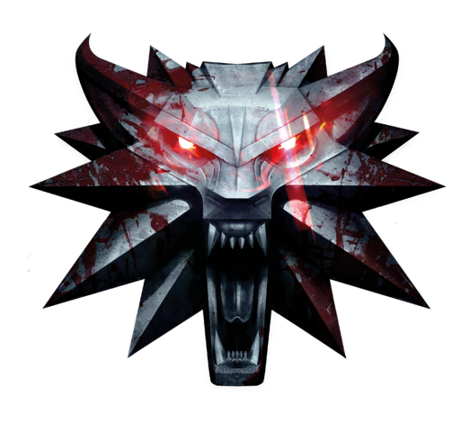

The Wild Hunt -- for ages the appearance of this cavalcade of ghostly riders in the night sky has presaged war, plague and death. Few know the riders’ true nature or origin, yet fear grips all at their passing. It is believed they steal souls to add to their ghastly retinue. They come at night, in the cold of winter, and the Aurora Borealis always preceded their appearance.
The monster threat is real and strong. Along your path you’ll encounter entire areas overrun by beasts, the humans and nonhumans who once lived there gone. Should you decide to risk death, your job will be to exterminate every last pest and render these places safe once more. Succeed and you’ll see folk return, more than eager to craft and sell you rare, enhanced gear.
The world of The Witcher beckons to be explored -- just pick a point on the horizon and venture off into the unknown. You’ll have your trusty horse to call on whenever you need. Load it with trophies taken from the massive beasts you hunt down or gallop it into combat to crush those standing in your way. You’ll also go where no horse can follow, descending deep into sprawling caves, diving beneath the waves to gather sea herbs and search forgotten shipwrecks for long-lost treasure.
One of the best game ever made
- GAMESPOT
A must see next generation RPG
- GAMEINFORMER